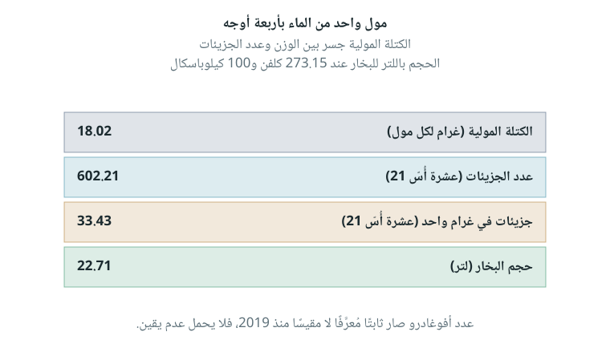

المول
Mole
وحدة كمية المادة في النظام الدولي، تساوي عددًا ثابتًا من الكيانات مقداره 6.02214076×10²³، جُعل مُعرَّفًا بذاته ولم يبقَ معلَّقًا بكتلة الكربون-12.
المول وحدة قياس كمية المادة، ومقداره عدد أفوغادرو من الكيانات: 6.02214076×10²³ كيانًا. الكيان قد يكون ذرة أو جزيئًا أو أيونًا أو إلكترونًا، ولا بدّ من تسميته، فمول الهيدروجين الذري ليس مول جزيء الهيدروجين. هذا الشرط ليس شكليًّا: عدد الكيانات في الغرام الواحد يختلف من مادة إلى أخرى باختلاف كتلة الكيان.
منذ تعديل النظام الدولي في 2019 صار المول معرَّفًا بتثبيت عدد أفوغادرو، ولم يبقَ معرَّفًا بعدد الذرات في 12 غرامًا من الكربون-12 كما كان. الأثر العملي أن كتلة المول من الكربون-12 صارت قيمة مقيسة، والعدد نفسه صار ثابتًا لا يقاس.
يربط المول بين العالم الذرّي والعالم المخبري: الكتلة المولية بالغرام لكل مول تساوي عدديًّا الكتلة الجزيئية النسبية. تحويل الكتلة إلى مولات هو الخطوة الأولى في كل حساب متكافئ وفي كل معايرة، وهو ما يجعل المول أكثر وحدة كيميائية تُستخدم بعد وحدات التركيز.
الآلية
كيف يحدث الأمر على مستوى الجسيمات أو المتغيّرات المباشرة
عمل المول ليس قياسًا مباشرًا لعدد الجزيئات، بل تحويل عبر وسيط كتلي. تُوزن المادة بموازنة دقيقة، والكتلة المولية تعطي عدد المولات، وضربها في عدد أفوغادرو يعطي عدد الكيانات. السلسلة تعمل لأن كتل الذرات نفسها مقيسة بوحدة الكتلة الذرية الموحّدة، وهذه الوحدة معرَّفة بحيث تساوي 1/12 من كتلة ذرة كربون-12، ومقدارها بالكيلوغرام 1.66053907×10⁻²⁷. ثبات النسبة بين الكتلة الذرية والكتلة المولية هو ما يجعل هذا التحويل ممكنًا بلا معرفة عددية مسبقة بعدد الجزيئات.
الأرقام والوحدات
العلاقات والوحدات والنطاقات العددية التي تسند الشرح
الكتلة المولية للماء 18.015 g/mol، فغرام واحد يحتوي 6.02214076×10²³ ÷ 18.015 = 3.34×10²² جزيئًا. وكتلة الجزيء الواحد تساوي 18.015 ÷ 6.02214076×10²³ = 2.99×10⁻²³ غرامًا. هذه الأرقام تشرح سبب استخدام المول: عدّ جزيئات عيّنة وزنها ملّيغرام واحد يعني عدّ 3.3×10¹⁹ جزيئًا، وهو ما لا تفعله أي أداة، بينما الوزن يفعله في ثانية.
الفرق الدقيق
المفهوم الملتبس الذي يُخلَط به، وأين ينفصلان
الخلط الأول بين المول والجزيء: المول كمية عددية، والجزيء كيان واحد، والنسبة بينهما هي عدد أفوغادرو. الثاني بين الكتلة المولية والكتلة الجزيئية: الأولى بالغرام لكل مول وتُستعمل في الحساب، والثانية بوحدة الكتلة الذرية الموحّدة وتُستعمل في المقارنة. الثالث ظنّ أن عدد أفوغادرو «عدد مقيس بعدد دقيق»؛ هو الآن ثابت مُعرَّف بلا عدم يقين. الرابع أن المول مقيّد بالذرات: يجوز أن يكون مول أيونات أو إلكترونات أو فوتونات، وكلها كيانات قابلة للعدّ ولو لم تكن مادة بالمعنى المخبري.
حدود التعريف
أين ينكسر التعريف أو النموذج وما الذي لا يفسّره
تعريف المول يفرض تحديد الكيان، ويصبح غامضًا في الأنظمة التي لا تكون فيها الكيانات منفصلة، كالمحاليل الأيونية أو الأغشية المائية. وفي البوليمرات والبروتينات لا توجد كتلة مولية واحدة بل توزيع، والرقم المعلن متوسط يعتمد على طريقة القياس، فيجب ذكر نوع المتوسط. ودقة عدد أفوغادرو لا تعني دقة التحويل: خطأ 0.1 ملّيغرام في الوزن يعني خطأ بنحو 3×10¹⁸ جزيء في العيّنة. وأخيرًا، الكتلة المولية المحسوبة من الجدول الدوري هي متوسط نظائري، لا كتلة نظير بعينه.

| الكمية | القيمة | المصدر |
|---|---|---|
| عدد أفوغادرو | 6.02214076×10²³ كيان/مول | [1] |
| الكتلة المولية للماء | 18.015 غرام/مول | [2] |
| عدد جزيئات الماء في غرام واحد | 3.34×10²² جزيء/غرام | [3] |
| كتلة جزيء الماء الواحد | 2.99×10⁻²³ غرام | [3] |
المصادر
- 1 CODATA Value: Avogadro constant — NIST, Fundamental Physical Constants. physics.nist.gov/cgi-bin/cuu/Value?na · اطُّلع عليه 2026-11-16
- 2 Water — NIST Chemistry WebBook, SRD 69 — NIST. webbook.nist.gov/cgi/cbook.cgi?ID=C7732185 · اطُّلع عليه 2026-11-16
- 3 Chemistry 2e — 3.1 Formula Mass and the Mole Concept — OpenStax, Rice University. openstax.org/books/chemistry-2e/pages/3-1-formula-mass-and-the-mole-concept · اطُّلع عليه 2026-11-16
استشهد بهذا المصطلح
الصيغتان مبنيتان من بيانات الصفحة نفسها: العنوان والتاريخ ورابط النسخة المنشورة.
المول — Mole. (2026). ديوان المعرفة — انفراد. https://infiradev.com/diwan/terms/mole.html
@misc{mole2026,
title = {المول},
titleaddon = {Mole},
howpublished = {{ديوان المعرفة — انفراد} — مرجع علمي عربي},
year = {2026},
url = {https://infiradev.com/diwan/terms/mole.html},
urldate = {2026-11-16},
note = {مراجعة علمية: مراجعة آلية — ديوان المعرفة (روابط المصادر + عقد المحتوى + وجود الرسم) 2026-11-16}
}
راجعه: مراجعة آلية — ديوان المعرفة (روابط المصادر + عقد المحتوى + وجود الرسم) 2026-11-16 · 2026-11-16 · آخر تحديث 2026-11-16